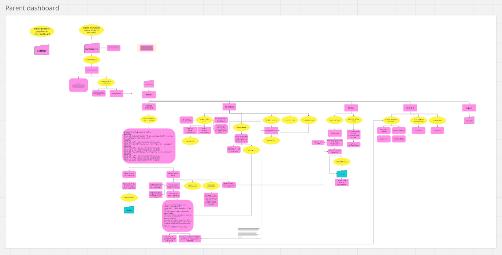
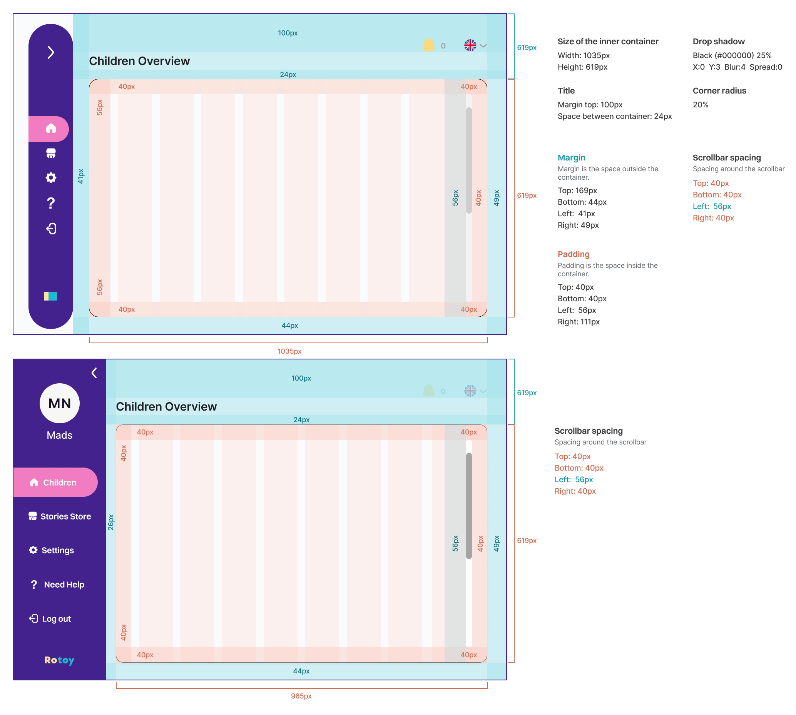

In May 2024, I began a 3-month internship as a Digital/UI Designer at Rotoy to further develop my skills in designing digital platforms. Rotoy is a Danish EdTech startup with an innovative mission to create a robotics learning platform that makes programming accessible and fun for children, especially young girls who are often underrepresented in the field.
My main responsibilities included prototyping the Parent Dashboard in Figma, focusing on UI/UX design within the EdTech sector, further developing Rotoy’s design system, and creating character designs for coding stories and promotional materials.
I played a key role in finalizing the complete interactive prototype for the Parent Dashboard, which provides parents with insights into their children's learning outcomes and offers features for purchasing new coding missions with interactive stories, managing accounts, and overseeing their children's activities.
Research
EdTech was a new territory for me as a UI/UX designer, though I had participated in various EdTech testing during high school and university. There were aspects I enjoyed and others I felt could be improved.
My bachelor’s thesis focused on statistics, particularly in self-tracking, so I was excited to apply that knowledge when designing an overview of children’s learning outcomes. This task allowed me to turn my research into practical solutions.
I explored other EdTech platforms like Duolingo to understand what statistics users would find valuable. Rotoy’s UX team, with their extensive interviews with teachers and parents, provided crucial insights that helped refine the design.
User Flow
Rotoy uses Miro to develop user flows, and I was tasked with integrating the complete user flow of the Parent Dashboard into the platform’s overall flow. The platform primarily relies on a side menu bar for navigation, allowing users to easily access different pages. The menu features simple icons for clarity and can be expanded for a more detailed view if needed.
The Activity Page includes interactive elements like hoverable graphs that provide additional insights and details on how information was gathered. Users can also explore stories in greater detail.
The Stories Store page is another interaction-heavy area, designed to give parents quick access to approve or reject stories requested by their children, as well as to explore and purchase new releases.
Design System
When I joined Rotoy, the design system was already well-established and thoughtfully crafted. However, as I began designing the Parent Dashboard, I recognized the need for new elements to be added. This led me to research and develop guidelines for containers, popups, and notifications, ensuring they aligned with Rotoy's branding and maintained consistency across the entire platform.
This process taught me invaluable lessons in creating guidelines that other designers and developers could easily follow. Alongside introducing these new guidelines, I also took the initiative to refine and enhance existing notifications and popups, ensuring they met the updated standards and contributed to consistency throughout the platform.
Notification System
In addition to enhancing the design system for containers and popups, I put a strong focus on refining the notification system, particularly in determining when and how notifications should be displayed. The platform has 3 types of notifications: user-generated (triggered by user actions), context-generated (triggered by content), and system-generated notifications (which may require user action or simply deliver information).
The design system now includes 5 types of notifications: Information, Error, Warning, Success, and a new category I introduced—Achievement. I recognized that the Success notifications weren't impactful enough to celebrate milestones, so I created the Achievement category.
This new notification type includes badges, leaderboards, and stars, designed to highlight significant accomplishments in a more meaningful way. Both children and parents receive Achievement notifications when key milestones are reached in the stories, adding an extra layer of engagement and motivation to the platform.
I had the opportunity to work on a fun side project at Rotoy, where I designed characters for some of their new interactive coding stories.
With my artistic background, this project really sparked my creativity and allowed me to have some creative fun. It was a new challenge for me, as I hadn’t done much character design in vector format before, especially creating characters with different expressions and poses. I completed 3 character designs that will be featured in upcoming stories and other promotional materials.
It’s exciting to think that these characters will continue their adventures long after my time at Rotoy has ended.
During my time at Rotoy, I gained invaluable experience working alongside a diverse team of professionals, including experts in robotics, web development, UX design, and marketing.
The role was both challenging and fast-paced, particularly when delivering the Parent Dashboard to the tech team. This involved creating a fully functional prototype and presenting it for review. I was pleased to receive positive feedback for my work and was able to address any minor issues quickly. My ability to think on my feet and meet tight deadlines was recognized and praised.
I also took on a mentoring role, assisting other interns with the design system and guiding them through our Figma files and workflows.
Collaborating with the Rotoy team was an exciting experience that offered me insights into the EdTech field and introduced me to many talented individuals.